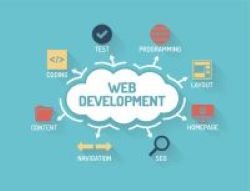

This is me
Contact
- Florida, USA
- 786-878-1267
- danielaburkereyes@gmail.com
I am going to tell you some things about me, hope you like it! Don't forget to
My name is Sara Daniela Burke, everybody calls me Dany. I was born on December 5th, 1991. I’m 30 years old and I was born and raised in Ecuador, better known as The middle of the World. It is a beautiful country to grow up in. I grew up surrounded by mountains and nature. You can find the most wonderful landscapings in the world, like Annie Dillard, a famous american author once said: The point of going somewhere in Ecuador is not to see the most spectacular anything. It is simply to see what is there.
Ecuador in picturesI studied Finance in college, and after I graduated I moved to the US. I have been living here for over 6 years, and I love it.
Since I arrived here I have been working in different industries, but during COVID, I discover my passion for programming,
I started by creating an
e-commerce website with some templates, but I wanted to learn everything from scratch, in order to be a professional Web Developer.
I want to become a web developer because I want to be able to create apps and websites that can contribute in a positive way to the world.
I think technology is now like a necessity, it allows people to learn, develop, and connect with other people around the world.
With this career I think I have the potential of helping and impacting not only locally but also globally in great ways.